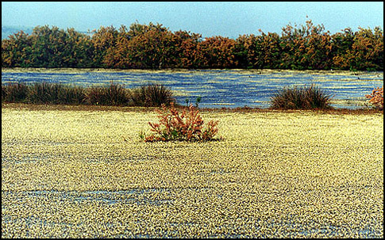
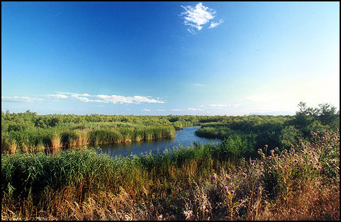
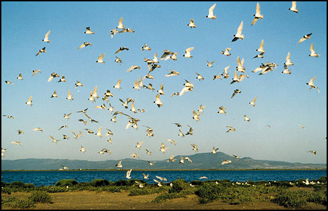

Βλάστηση των υγροτόπων
Πολλά και σπάνια είδη βλάστησης μπορούν να απαντηθούν στους υγροτόπους. Υπάρχουν ετήσια είδη τα οποία ζουν για μικρές περιόδους όταν η περιοχή πλημμυρίζει εποχιακά και άλλα είδη τα οποία εξαρτώνται από το βάθος του νερού και την αλατότητα. Ωστόσο υπάρχουν πολλά είδη βλάστησης που προτιμούν τις ασβεστούχες περιοχές των Μεσογειακών υγροτόπων. Υπάρχουν κατηγορίες βλάστησης που απαντώνται στους υγροτόπους και έχουν στενή σχέση με το δυναμικό αλλά και ασταθές περιβάλλον των υγροτόπων:
Αλοφυτική βλάστηση των αλμυρόβαλτων και των λιμνοθαλασσών
 Οι αλμυρόβαλτοι συνήθως περιλαμβάνουν λίγα φυτικά είδη από τα οποία ένα είναι το κυρίαρχο. Στις λιμνοθάλασσες, η αλατότητα, η οποία ποικίλει κατά τη διάρκεια του έτους, είναι ο παράγοντας που επηρεάζει την ανάπτυξη των φυτικών ειδών. Στο εξωτερικό περιβάλλον των λιμνοθαλασσών εκεί όπου συνδέονται με τη θάλασσα, υπάρχουν φυτά βυθισμένα και ριζωμένα καλά στο λασπώδη βυθό. Πρόκειται για τα φυτά Zostera και Ruppia, σημαντικές πηγές τροφής για τους κύκνους τις πάπιες κ.ά.
Οι αλμυρόβαλτοι συνήθως περιλαμβάνουν λίγα φυτικά είδη από τα οποία ένα είναι το κυρίαρχο. Στις λιμνοθάλασσες, η αλατότητα, η οποία ποικίλει κατά τη διάρκεια του έτους, είναι ο παράγοντας που επηρεάζει την ανάπτυξη των φυτικών ειδών. Στο εξωτερικό περιβάλλον των λιμνοθαλασσών εκεί όπου συνδέονται με τη θάλασσα, υπάρχουν φυτά βυθισμένα και ριζωμένα καλά στο λασπώδη βυθό. Πρόκειται για τα φυτά Zostera και Ruppia, σημαντικές πηγές τροφής για τους κύκνους τις πάπιες κ.ά.
Στη παραλιακή ζώνη που επηρεάζεται πολύ από τη θάλασσα και συχνά καλύπτεται από αυτήν, υπάρχουν ετήσια αλοφυτικά φυτά εξαιρετικής αντοχής στην αλατότητα. Τα αλόφυτα ανάλογα με την ποιότητα του εδάφους, σχηματίζουν δύο ευδιάκριτες ζώνες :
- Η μία ζώνη είναι στην παραλία , στα χαμηλά λασποτόπια με τις χαρακτηριστικές αρμυρίθρες (Salicornia spp) αναμεμειγμένες με το Aeluropus, φυτά των αλμυρόβαλτων τα οποία αντέχουν και επιβιώνουν στις βαριές πλημμύρες και στην υπερβόσκηση. Οι αρμυρίθρες καταλαμβάνουν μεγάλες εκτάσεις στους Μεσογειακούς αλμυρόβαλτους , ιδιαίτερα στα δέλτα ποταμών, γύρω από λιμνοθάλασσες και αλμυρές λίμνες. Με το ριζικό τους σύστημα συγκρατούν τη λάσπη βοηθώντας έτσι να δημιουργηθούν νέα εδάφη και να εγκατασταθούν άλλα φυτά, διηθήζουν και συγκρατούν τις τοξικές ουσίες του νερού.
- Η άλλη ζώνη διαμορφώνεται πιο εσωτερικά, εκεί όπου έμμεσα επηρεάζεται από το θαλασσινό νερό που κυκλοφορεί υπόγεια. Εδώ επικρατούν κατά "τούφες" τα βούρλα (Juncus spp ), μαζί με άλλα είδη ανθεκτικά στο αλάτι, εκτείνονται αρκετά μέσα και γύρω από τις λιμνοθάλασσες πριν δώσουν το έδαφος στους θάμνους με τα αρμυρίκια (Tamarisk shrubs) και τα υγρά λιβάδια αρκετά ψηλά από την επίδραση της θάλασσας.
`Ελη και υγρά λιβάδια
Στις υδάτινες εκτάσεις γλυκού νερού και γύρω από τις λίμνες και τα κανάλια όπου το αλμυρό νερό έχει ελάχιστη ή και καθόλου επίδραση, αναπτύσσονται υδρόβια φυτά σε πολλούς Μεσογειακούς υγροτόπους. Στην υδρόβια βλάστηση των γλυκών νερών μπορεί κανείς να διακρίνει τρεις τύπους, ανάλογα με τις προσαρμογές των φυτών στο βάθος του νερού, τη θερμοκρασία, την αλατότητα :
- Βλάστηση που συγκροτείται από φυτά τελείως βυθισμένα στο νερό, όπως μυριόφυλλο (Myriophyllum spicatum) , ο ποταμογείτονας (Potamogeton sp.).
- Βλάστηση με φυτά ριζωμένα ή και όχι στον πυθμένα ενώ τα φύλλα και άνθη τους να επιπλέουν στην επιφάνεια, όπως το νούφαρο ( Nymphaea alba), το βατράχι (Ranunculus fluitans), η φακή (Lemma minor), το νεροκάστανο (Trapa natans) φυτό που απειλείται στην υπόλοιπη Ευρώπη.
- Βλάστηση με φυτά μισοβυθισμένα, η ρίζα τους είναι σε υγρά εδάφη για αρκετό χρονικό διάστημα και το υπόλοιπο φυτό αναπτύσσεται εκτός νερού. Τα φυτά αυτά εξαρτώνται από το βάθος του νερού και τη έκταση της βόσκησης και ενόχλησης από τα ζώα. Τα πιο κοινά είδη στη Μεσόγειο είναι το αγριοκάλαμο (Phragmites australis) που κυριαρχεί και σχηματίζει εντυπωσιακούς καλαμώνες σημαντικούς για τα πουλιά του υγροτόπου, το ψαθί (Typha angustifolia, Typha latifolia) και οι σύφες (Scirpus maritimus).
Όταν οι περιοχές αυτές υπερβόσκονται, τότε τα είδη Aeluropus ήScirpus maritimus μπορεί να αντικαταστήσουν το αγριοκάλαμο. Το αλμυρό νερό δεν επηρεάζει τα υγρά λιβάδια καθώς αυτά κατακρατούν αρκετές ποσότητες γλυκού νερού, αποτελούν ιδανικούς βοσκότοπους ιδιαίτερα το καλοκαίρι.
Η ποικιλία, το πλήθος καθώς και η δομή των υδρόβιων κοινωνιών έχουν εξέχουσα οικολογική σημασία για τα ζώα του υγροτόπου και ιδιαίτερα για τα πουλιά. Πολλά είδη από αμφίβια (νεροχελώνες, νερόφιδα), πουλιά (πορφυροτσικνιάς, βαλτόπαπια) και θηλαστικά (βίδρα) χρειάζονται περισσότερους από έναν τύπους βλάστησης για να επιτελέσουν τις βιολογικές τους λειτουργίες.
Παρόχθια Δάση
Τα παρόχθια δάση αποτελούν ένα ιδιαίτερο βιότοπο μακριά από τη θάλασσα, ικανό να συντηρεί μεγάλη ποικιλία ειδών πανίδας και χλωρίδας. Σήμερα τα περισσότερα παρόχθια δάση της Ευρώπης έχουν εξαφανιστεί, αν και σώζονται μερικές συστάδες σε κάποια δέλτα ποταμών. Συνήθως βρίσκονται σε περιοχές που κατακλύζονται από γλυκά νερά, στους μαιάνδρους και τις αμμονησίδες που σχηματίζει το ποτάμι. Τα συνήθη είδη που επικρατούν στα Μεσογειακά παραποτάμια δάση είναι : οι λεύκες (Populus spp.), τα πλατάνια (Platanus spp.), οι ιτιές (Salix spp.), οι φτελιές (Ulmus spp.), τα σκλήθρα (Alnus spp.).
Ανάμεσα στα ψηλά δένδρα του δάσους δημιουργείται ένα πλέγμα από αναρριχώμενα φυτά σφιχτοδεμένα στους κορμούς των δένδρων, δημιουργώντας έτσι ένα τείχος αδιαπέρατο.
Τα τελευταία αυτά απομεινάρια των παρόχθιων δασών αποτελούν καταφύγιο για το φώλιασμα ή τη ξεκούραση των πουλιών (βασιλαετό, κραυγαετό, αργυροτσικνιά, λευκοτσικνιά, κρυπτοτσικνιά κ.ά.), δίνουν καταφύγιο σε μικρά και μεγάλα ζώα (αγριόγατα, αλεπού, τσακάλι, σκίουρο, δασομυωξό κ.ά.). Τα παρόχθια όμως δάση είναι πολύτιμα για τον τόπο γιατί :
- Προστατεύουν με τις ρίζες τους τις όχθες από την έντονη διάβρωση
- Απορροφούν με τις ρίζες τους τους διάφορους ρύπους και καθαρίζουν τα νερά των ποταμών
- Βελτιώνουν το τοπικό κλίμα
- Βοηθούν στο να δημιουργηθούν εύφορα εδάφη με τα φύλλα και τα κλαδιά που πέφτουν στο έδαφος και αποσυντίθενται γρήγορα. Δημιουργείται φυτικό λίπασμα εμπλουτίζοντας το χώμα με θρεπτικές ουσίες.
Πανίδα των υγροτόπων
Η σημαντκή ποικιλία ενδιαιτημάτων που περιλαμβάνουν οι υγρότοποι, παρέχει τις αναγκαίες προυποθέσεις για την ύπαρξη και την επιβίωση μιας μεγάλης ποκιλίας σε είδη ζώων.
Σε μικρούς υγροτόπους οι οποίοι όμως βρίσκονται κάτω από μεγάλη απειλή, τα αμφίβια και τα ερπετά έχουν σχεδόν αποκλειστεί. Περίπου 50 είδη των αμφιβίων παρατηρούνται στη Μεσόγειο και από αυτά τα 27 είδη είναι ενδημικά.
Τα θηλαστικά των Μεσογειακών υγροτόπων δεν είναι πολλά και αυτό γιατί έχουν καταστραφεί ανεπανόρθωτα οι βιότοποί τους. Οι υγρότοποι όμως προσφέρουν ακόμα καταφύγιο στα ζώα κατά το καλοκαίρι που η θερμοκρασία είναι υψηλή και υπάρχει μεγάλη ξηρασία. Ιδιαίτερα οι μεγάλοι υγρότοποι παρέχουν σημαντικούς βιοτόπους σε σπάνια είδη τα οποία χρειάζονται την απομόνωση και χώρους πραγματικά αδιατάραχτους.
Πολύς κόσμος όταν επισκέπτεται τους υγροτόπους εντυπωσιάζεται ιδιαίτερα όταν παρακολουθεί τα πουλιά και ιδίως αυτά τα οποία είναι σπάνια. Οκτώ είδη από τα 29 είδη πουλιών παγκοσμίως απειλούμενα, είναι είδη τα οποία παρατηρούνται σε Μεσογειακούς υγροτόπους. Τα περισσότερα από τα παρυδάτια πουλιά μετακινούνται από τον ένα υγρότοπο στον άλλο στις μεταναστευτικές περιόδους. Η Μεσόγειος βρίσκεται πάνω στους μεγάλους άξονες της μετανάστευσης των πουλιών και δύο φορές το χρόνο εκατομμύρια πουλιών διασχίζουν τη Μεσόγειο Θάλασσα - βόρεια την άνοιξη προς τους ευρωπαικούς χώρους αναπαραγωγής και νότια το φθινόπωρο προς τα μέρη ξεχειμωνιάσματος. Είναι λοιπόν βασικό οι μεσογειακοί υγρότοποι να διατηρηθούν γιατί η απώλεια τους θα σημάνει ανεπανόρθωτες καταστροφές στη διατήρηση πληθυσμών ειδών πουλιών αρκετές χιλιάδες χιλιόμετρα μακριά.